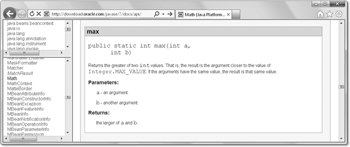
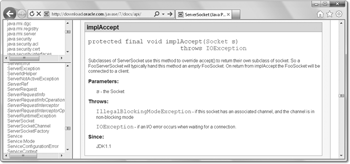
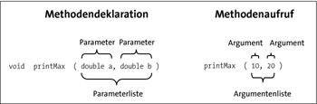
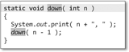

2.7 Methoden einer Klasse
In objektorientierten Programmen interagieren zur Laufzeit Objekte miteinander und senden sich gegenseitig Nachrichten als Aufforderung, etwas zu machen. Diese Aufforderungen resultieren in einem Methodenaufruf, in dem Anweisungen stehen, die dann ausgeführt werden. Das Angebot eines Objekts, also das, was es »kann«, wird in Java durch Methoden ausgedrückt.
Wir haben schon mindestens eine Methode kennengelernt: println(). Sie ist eine Methode vom out-Objekt. Ein anderes Programmstück schickt nun eine Nachricht an das out-Objekt, die println()-Methode auszuführen. Im Folgenden werden wir den aktiven Teil des Nachrichtenversendens nicht mehr so genau betrachten, sondern wir sagen nur noch, dass eine Methode aufgerufen wird.
Für die Deklaration von Methoden gibt es drei Gründe:
- Wiederkehrende Programmteile sollen nicht immer wieder programmiert, sondern an einer Stelle angeboten werden. Änderungen an der Funktionalität lassen sich dann leichter durchführen, wenn der Code lokal zusammengefasst ist.
- Komplexe Programme werden in kleine Teilprogramme zerlegt, damit die Komplexität des Programms heruntergebrochen wird. Damit ist der Kontrollfluss leichter zu erkennen.
- Die Operationen einer Klasse, also das Angebot eines Objekts, sind ein Grund für Methodendeklarationen in einer objektorientierten Programmiersprache. Daneben gibt es aber noch weitere Gründe, die für Methoden sprechen. Sie werden im Folgenden erläutert.
2.7.1 Bestandteil einer Methode
Eine Methode setzt sich aus mehreren Bestandteilen zusammen. Dazu gehören der Methodenkopf (kurz Kopf) und der Methodenrumpf (kurz Rumpf). Der Kopf besteht aus einem Rückgabetyp (auch Ergebnistyp genannt), dem Methodennamen und einer optionalen Parameterliste.
Nehmen wir die bekannte statische main()-Methode:
public static void main( String[] args )
{
System.out.println( "Wie siehst du denn aus? Biste gerannt?" );
}
Sie hat folgende Bestandteile:
- Die statische Methode liefert keine Rückgabe, daher ist der »Rückgabetyp« void. (An dieser Stelle sollte bemerkt werden, dass void in Java kein Typ ist.) void heißt auf Deutsch übersetzt: »frei«, »die Leere« oder »Hohlraum«.
- Der Methodenname ist main.
- Die Parameterliste ist String[] args.
- Der Rumpf besteht nur aus der Bildschirmausgabe.
| Namenskonvention |
|
Methodennamen beginnen wie Variablennamen mit Kleinbuchstaben und werden in der gemischten Groß-/Kleinschreibung verfasst. Bezeichner dürfen nicht wie Schlüsselwörter heißen.[81](Das führte bei manchen Bibliotheken (JUnit sei hier als Beispiel genannt) zu Überraschungen. In Java 1.4 etwa wurde das Schlüsselwort assert eingeführt, das JUnit als Methodenname wählte. Unzählige Zeilen Programmcode mussten daraufhin von assert() nach assertTrue() konvertiert werden.) |
Die Signatur einer Methode
Der Methodenname und die Parameterliste bestimmen die Signatur einer Methode; der Rückgabetyp und Ausnahmen gehören nicht dazu.[] Um es ganz präzise zu machen: Typparameter gehörten auch zur Signatur – sie sind Bestandteil von Kapitel 9. Die Parameterliste ist durch die Anzahl, die Reihenfolge und die Typen der Parameter beschrieben. Pro Klasse darf es nur eine Methode mit derselben Signatur geben, sonst meldet der Compiler einen Fehler. Da die Methoden void main( String[] args ) und String main( String[] arguments ) die gleiche Signatur (main, String[]) besitzen – die Namen der Parameter spielen keine Rolle –, können sie nicht zusammen in einer Klasse deklariert werden (später werden wir sehen, dass Unterklassen durchaus gewisse Sonderfälle zulassen).
2.7.2 Signatur-Beschreibung in der Java-API
In der Java-Dokumentation sind alle Methoden mit ihren Rückgaben und Parametern inklusive möglicher Ausnahmen genau definiert. Betrachten wir die Dokumentation der statischen Methode max() der Klasse Math:
Abbildung 2.9: Die Online-API-Dokumentation für Math.max()
Die Hilfe gibt Informationen über die komplette Signatur der Methode. Der Rückgabetyp ist ein int, die statische Methode heißt max(), und sie erwartet genau zwei int-Zahlen. Verschwiegen haben wir die Schlüsselwörter public und static – die Modifizierer. public gibt die Sichtbarkeit an und sagt, wer diese Methode nutzen kann. Im Fall von public bedeutet es, dass jeder diese Methode verwenden kann. Das Gegenteil ist private: In dem Fall kann nur das Objekt selbst diese Methode nutzen. Das ist sinnvoll, wenn Methoden benutzt werden, um die Komplexität zu verkleinern und Teilprobleme zu lösen. Private Methoden werden in der Regel nicht in der Hilfe angezeigt, da sie ein Implementierungsdetail sind. Das Schlüsselwort static zeigt an, dass sich die Methode mit dem Klassennamen nutzen lässt, also kein Exemplar eines Objekts nötig ist.
Es gibt Methoden, die noch andere Modifizierer und eine erweiterte Signatur besitzen. Ein weiteres Beispiel aus der API (siehe Abbildung 2.10).
Die Sichtbarkeit dieser Methode ist protected. Das bedeutet: Nur abgeleitete Klassen und Klassen im gleichen Verzeichnis (Paket) können diese Methode nutzen. Ein zusätzlicher Modifizierer ist final, der in einer Vererbung der Unterklasse nicht erlaubt, die Methode zu überschreiben und ihr neuen Programmcode zu geben. Zum Schluss folgt hinter dem Schlüsselwort throws eine Ausnahme. Diese sagt etwas darüber aus, welche Fehler die Methode verursachen kann und worum sich der Programmierer kümmern muss. Im Zusammenhang mit der Vererbung werden wir noch über protected und final sprechen. Dem Ausnahmezustand widmen wir Kapitel 6, »Exceptions«. Die Dokumentation zeigt mit »Since: JDK 1.1« an, dass es die Methode seit Java 1.1 gibt. Die Information kann auch an der Klasse festgemacht sein.
Abbildung 2.10: Ausschnitt aus der API-Dokumentation für die Klasse java.net.ServerSocket
2.7.3 Aufruf einer Methode
Da eine Methode immer einer Klasse oder einem Objekt zugeordnet ist, muss der Eigentümer beim Aufruf angegeben werden. Im Fall von System.out.println() ist println() eine Methode vom out-Objekt. Wenn wir das Maximum zweier Fließkommazahlen mit Math.max(a, b) bilden, dann ist max() eine (statische) Methode der Klasse Math. Für den Aufrufer ist damit immer ersichtlich, wer diese Methode anbietet, also auch, wer diese Nachricht entgegennimmt. Was der Aufrufer nicht sieht, ist die Arbeitsweise der Methode. Der Methodenaufruf verzweigt in den Programmcode, aber der Aufrufer weiß nicht, was dort geschieht. Er betrachtet nur das Ergebnis.
Die aufgerufene Methode wird mit ihrem Namen genannt. Die Parameterliste wird durch ein Klammerpaar umschlossen. Diese Klammern müssen auch dann gesetzt werden, wenn die Methode keine Parameter enthält. Eine Methode wie zum Beispiel System.out.println() gibt nichts als Ergebnis einer Berechnung zurück. Anders ist die statische Methode max(); sie liefert ein Ergebnis. Damit ergeben sich vier unterschiedliche Typen von Methoden:
| Methode | Ohne Rückgabewert | Mit Rückgabewert |
| Ohne Parameter | System.out.println() | System.currentTimeMillis() |
| Mit Parameter | System.out.println(4) | Math.max(12, 33) |
Die statische Methode System.currentTimeMillis() gibt die Anzahl der verstrichenen Millisekunden ab dem 1.1.1970 als long zurück.
2.7.4 Methoden ohne Parameter deklarieren
Die einfachste Methode besitzt keinen Rückgabewert und keine Parameter. Der Programmcode steht in geschweiften Klammern hinter dem Kopf und bildet damit den Körper der Methode. Gibt die Methode nichts zurück, dann wird void vor den Methodennamen geschrieben. Falls die Methode etwas zurückgibt, wird der Typ der Rückgabe anstelle von void geschrieben.
Schreiben wir eine statische Methode ohne Rückgabe und Parameter, die etwas auf dem Bildschirm ausgibt:
Listing 2.30: FriendlyGreeter.java
class FriendlyGreeter
{
static void greet()
{
System.out.println( "Guten Morgen. Oh, und falls wir uns nicht mehr" +
" sehen, guten Tag, guten Abend und gute Nacht!" );
}
public static void main( String[] args )
{
greet();
}
}
Eigene Methoden können natürlich wie Bibliotheksmethoden heißen, da sie zu unterschiedlichen Klassen gehören. Statt greet() hätten wir also den Namen println() vergeben dürfen.
| Tipp |
|
Die Vergabe eines Methodennamens ist gar nicht so einfach. Nehmen wir zum Beispiel an, wir wollen eine Methode schreiben, die eine Datei kopiert. Spontan kommen uns zwei Wörter in den Sinn, die zu einem Methodennamen verbunden werden wollen: »file« und »copy«. Doch in welcher Kombination? Soll es copyFile() oder fileCopy() heißen? Wenn dieser Konflikt entsteht, sollte das Verb die Aktion anführen, unsere Wahl also auf copyFile() fallen. Methodennamen sollten immer das Tätigkeitswort vorne haben und das Was, das Objekt, an zweiter Stelle. |

Eine gedrückte  -Taste und ein Mausklick auf einen Bezeichner lässt Eclipse zur Deklaration springen.
Ein Druck auf hat den gleichen Effekt. Steht der Cursor in unserem Beispiel auf dem Methodenaufruf
greet() und wird gedrückt, dann springt Eclipse zur Definition in Zeile 3 und hebt den Methodennamen
hervor.
-Taste und ein Mausklick auf einen Bezeichner lässt Eclipse zur Deklaration springen.
Ein Druck auf hat den gleichen Effekt. Steht der Cursor in unserem Beispiel auf dem Methodenaufruf
greet() und wird gedrückt, dann springt Eclipse zur Definition in Zeile 3 und hebt den Methodennamen
hervor.
2.7.5 Statische Methoden (Klassenmethoden)
Bisher arbeiten wir nur mit statischen Methoden (auch Klassenmethoden genannt). Das Besondere daran ist, dass die statischen Methoden nicht an einem Objekt hängen und daher immer ohne explizit erzeugtes Objekt aufgerufen werden können. Das heißt, statische Methoden gehören zu Klassen an sich und sind nicht mit speziellen Objekten verbunden. Am Aufruf unserer statischen Methode greet() lässt sich ablesen, dass hier kein Objekt gefordert ist, mit dem die Methode verbunden ist. Das ist möglich, denn die Methode ist als static deklariert, und innerhalb der Klasse lassen sich alle Methoden einfach mit ihrem Namen nutzen.
Statische Methoden müssen explizit mit dem Schlüsselwort static kenntlich gemacht werden. Fehlt der Modifizierer static, so deklarieren wir damit eine Objektmethode, die wir nur aufrufen können, wenn wir vorher ein Objekt angelegt haben. Das heben wir uns aber bis zum nächsten Kapitel, »Klassen und Objekte«, auf. Die Fehlermeldung sollte Ihnen aber keine Angst machen. Lassen wir von der greet()-Deklaration das static weg und ruft die statische main()-Methode wie jetzt ohne Aufbau eines Objekts die dann nicht mehr statische Methode greet() auf, so gibt es den Compilerfehler »Cannot make a static reference to the non-static method greet() from the type FriendlyGreeter«.
Ist die statische Methode in der gleichen Klasse wie der Aufrufer deklariert – in unserem Fall main() und greet() –, so ist der Aufruf allein mit dem Namen der Methode eindeutig. Befinden sich jedoch Methodendeklaration und Methodenaufruf in unterschiedlichen Klassen, so muss der Aufrufer den Namen der Klasse nennen; wir haben so etwas schon einmal bei Aufrufen wie Math.max() gesehen.
class FriendlyGreeter |
class FriendlyGreeterCaller |
2.7.6 Parameter, Argument und Wertübergabe
Einer Methode können Werte übergeben werden, die sie dann in ihre Arbeitsweise einbeziehen kann. Der Methode println(2001) ist zum Beispiel ein Wert übergeben worden. Sie wird damit zur parametrisierten Methode.
| Beispiel |
|
Werfen wir einen Blick auf die Methodendeklaration printMax(), die den größeren der beiden übergebenen Werte auf dem Bildschirm ausgibt. static void printMax( double a, double b ) |
Um die an Methoden übergebenen Werte anzusprechen, gibt es formale Parameter. Von unserer statischen Methode printMax() sind a und b die formalen Parameter der Parameterliste. Jeder Parameter wird durch ein Komma getrennt aufgelistet, wobei für jeden Parameter der Typ angegeben sein muss; eine Kurzform wie bei der sonst üblichen Variablendeklaration wie double a, b ist nicht möglich. Jede Parametervariable einer Methodendeklaration muss natürlich einen anderen Namen tragen.
Argumente (aktuelle Parameter)
Der Aufrufer der Methode muss für jeden Parameter ein Argument angeben. Die im Methodenkopf deklarierten Parameter sind letztendlich lokale Variablen im Rumpf der Methode. Beim Aufruf initialisiert die Laufzeitumgebung die lokalen Variablen mit den an die Methode übergebenen Argumenten. Rufen wir unsere parametrisierte Methode etwa mit printMax(10, 20) auf, so sind die Literale 10 und 20 Argumente (aktuelle Parameter der Methode). Beim Aufruf der Methode setzt die Laufzeitumgebung die Argumente in die lokalen Variablen, kopiert also den Wert 10 in die Parametervariable a und 20 in die Parametervariable b. Innerhalb des Methodenkörpers gibt es so Zugriff auf die von außen übergebenen Werte.
Das Ende des Blocks bedeutet automatisch das Ende für die Parametervariablen. Der Aufrufer weiß auch nicht, wie die Parametervariablen heißen. Eine Typanpassung von int auf double nimmt der Compiler in unserem Fall automatisch vor. Die Argumente müssen vom Typ her natürlich passen, und es gelten die für die Typanpassung bekannten Regeln.
Abbildung 2.11: Die Begriffe »Parameter« und »Argument«
Wertübergabe per Call by Value
Wenn eine Methode aufgerufen wird, dann gibt es in Java ein bestimmtes Verfahren, in dem jedes Argument einer Parametervariablen übergeben wird. Diese Technik heißt Parameterübergabemechanismus. Viele Programmiersprachen verfügen oft über eine ganze Reihe von verwirrenden Möglichkeiten. Java kennt nur einen einfachen Mechanismus der Wertübergabe (engl. call by value, selten auch copy by value genannt). Ein Beispiel zum Methodenaufruf macht das deutlich:
int i = 2;
printMax( 10, i );
Unsere aufgerufene Methode printMax(double a, double b) bekommt zunächst 10 in die Variable a kopiert und dann den Inhalt der Variablen i (in unserem Beispiel 2) in b. Auf keinen Fall gibt der Aufrufer Informationen über den Speicherbereich von i an die Methode mit. In dem Moment, in dem die Methode aufgerufen wird, erfragt die Laufzeitumgebung die Belegung von i und initialisiert damit die Parametervariable b. Ändert printMax() die Variable b, so ändert dies nur die lokale Variable b (überschreibt also 2), aber die Änderung in der Methode ist für das außenstehende i ohne Konsequenz; i bleibt weiterhin bei 2. Wegen dieser Aufrufart kommt auch der Name »copy by value« zustande. Lediglich der Wert wird übergeben (kopiert) und kein Verweis auf die Variable.[82](… wie dies Referenzen in C++ tun.)
Auswertung der Argumentliste von links nach rechts *
Bei einem Methodenaufruf werden erst alle Argumente ausgewertet und anschließend der Methode übergeben. Dies bedeutet im Besonderen, dass Untermethoden ausgewertet und Zuweisungen gemacht werden können. Fehler führen dann zu einem Abbruch des Methodenaufrufs. Bis zum Fehler werden alle Ausdrücke ausgewertet.
2.7.7 Methoden vorzeitig mit return beenden
Läuft eine Methode bis zum Ende durch, dann ist die Methode damit beendet, und es geht zurück zum Aufrufer. In Abhängigkeit von einer Bedingung kann eine Methode jedoch vor dem Ende des Ablaufs mit einer return-Anweisung beendet werden. Das ist nützlich bei Methoden, die abhängig von Parametern vorzeitig aussteigen wollen. Wir können uns vorstellen, dass vor dem Ende der Methode automatisch ein verstecktes return steht. Ein unnötiges return am Ende des Methodenrumpfes sollte nicht geschrieben werden.
| Beispiel |
|
Eine statische Methode printSqrt() soll die Wurzel einer Zahl auf dem Bildschirm ausgeben. Bei Zahlen kleiner null erscheint eine Meldung, und die Methode wird verlassen. Andernfalls wird die Wurzelberechnung durchgeführt: |
|
static void printSqrt( double d ) |
2.7.8 Nicht erreichbarer Quellcode bei Methoden *
Folgt direkt hinter einer return-Anweisung Quellcode, so ist dieser nicht erreichbar – im Sinne von nicht ausführbar. return beendet also immer die Methode und kehrt zum Aufrufer zurück. Folgt nach dem return noch Quelltext, meldet der Compiler einen Fehler:
public static void main( String[] args )
{
int i = 1;
return;
i = 2; // Unreachable code!
}
Reduzieren wir eine Anweisung bis auf das Nötigste, das Semikolon, so führt dies bisweilen zu amüsanten Ergebnissen:
public static void main( String[] args )
{
;return;;
}
Das Beispiel enthält zwei Null-Anweisungen: eine vor dem return und eine dahinter. Doch das zweite Semikolon hinter dem return ist unzulässig, da es eine nicht erreichbare Anweisung darstellt.
| Tipp |
|
In manchen Fällen ist ein return in der Mitte einer Methode gewollt. Soll etwa eine Methode in der Testphase nicht komplett durchlaufen, sondern in der Mitte beendet werden, so können wir uns mit einer Anweisung wie if ( true ) return; retten. |
2.7.9 Methoden mit Rückgaben
Statische Methoden wie Math.max() liefern in Abhängigkeit von den Argumenten ein Ergebnis zurück. Für den Aufrufer ist die Implementierung egal; er abstrahiert und nutzt lediglich die Methode statt eines Ausdrucks. Damit Methoden Rückgabewerte an den Aufrufer liefern können, müssen zwei Dinge gelten:
- Eine Methodendeklaration bekommt einen Rückgabetyp ungleich void.
- Eine return-Anweisung gibt einen Wert zurück.
| Beispiel |
|
Eine statische Methode bildet den Mittelwert und gibt diesen zurück: static double avg( double x, double y ) |
Fehlt der Ausdruck, und ist es nur ein einfaches return, meldet der Compiler einen Programmfehler.
Obwohl einige Programmierer den Ausdruck gerne klammern, ist das nicht nötig. Klammern sollen lediglich komplexe Ausdrücke besser lesbar machen. Geklammerte Ausdrücke erinnern sonst nur an einen Methodenaufruf, und diese Verwechslungsmöglichkeit sollte bei Rückgabewerten nicht bestehen.
Der Rückgabewert muss an der Aufrufstelle nicht zwingend benutzt werden. Berechnet unsere Methode den Durchschnitt zweier Zahlen, ist es wohl eher ein Programmierfehler, den Rückgabewert nicht zu verwenden.
| Was andere können |
|
Obwohl zwar mehrere Parameter deklariert werden können, kann doch nur höchstens ein Wert an den Aufrufer zurückgegeben werden. In der Programmiersprache Python lassen sich auch mehrere Werte über ein sogenanntes Tupel zurückgeben. In Java lässt sich das über eine zurückgegebene Sammlung nachbilden. |
Eclipse erkennt, ob ein Rückgabetyp fehlt, und schlägt über +  einen passenden Typ vor.
einen passenden Typ vor.
Mehrere Ausstiegspunke mit return
Für Methoden mit Rückgabewert gilt ebenso wie für void-Methoden, dass es mehr als ein return geben kann. Aber wird irgendein return »getroffen«, ist Schluss mit der Methode und es geht zurück zum Aufrufer.
Schauen wir uns dazu eine Methode an, die das Vorzeichen einer Zahl ermittelt und +1, 0 oder –1 zurückgibt, wenn die Zahl entweder positiv, null oder negativ ist:
static int sign( int value )
{
if ( value < 0 )
return –1;
else if ( value > 0 )
return +1;
else
return 0;
}
Bei genauer Betrachtung fällt auf, dass auf keinen Fall ein anderer Test gemacht werden kann, wenn ein return die Methode beendet. Der Programmcode lässt sich umschreiben, denn in if-Anweisungen mit weiteren else-if-Alternativen und Rücksprung ist die Semantik die gleiche, wenn das else-if durch ein einfaches if ersetzt wird. Eine äquivalente sign()-Methode wäre also:
static int sign( int value )
{
if ( value < 0 )
return –1;
if ( value > 0 )
return +1;
return 0;
}
Kompakte Rümpfe bei boolean-Rückgaben
Ist die Rückgabe ein Wahrheitswert, so kann oftmals die Implementierung gekürzt werden, wenn ein Ausdruck vorher ausgewertet wird, der den Rückgabewert direkt bestimmt. Gewissen Konstruktionen lassen sich kompakter schreiben:
| Konstrukt mit Fallunterscheidung | Verkürzung |
if ( Bedingung ) |
return Bedingung; |
if ( Bedingung ) |
return ! Bedingung; |
return Bedingung ? true : false; |
return Bedingung; |
return Bedingung ? false : true; |
return ! Bedingung; |
Schummeln ohne return geht nicht
Jeder denkbare Programmfluss einer Methode mit Rückgabe muss mit einem return value; beendet werden. Der Compiler verfügt über ein scharfes Auge und merkt, wenn es einen Programmpfad gibt, der nicht zu einem return-Abschluss führt.
| Beispiel |
|
Die statische Methode isLastBitSet() soll 0 zurückgeben, wenn das letzte Bit einer Ganzzahl nicht gesetzt ist, und 1, wenn es gesetzt ist. Den Bit-Test erledigt der Und-Operator: static int isLastBitSet( int i ) // |
Bei den Dingen, die für den Benutzer meistens offensichtlich sind, muss der Compiler passen, da er nicht hinter die Bedeutung sehen kann. Ähnliches würde für eine Wochen-Methode gelten, die mit einem Ganzzahl-Argument (0 bis 6) einen Wochentag als String zurückgibt. Wenn wir die Fälle 0 = Montag bis 6 = Sonntag beachten, dann kann in unseren Augen ein Wochentag nicht 99 sein. Der Compiler kennt aber die Methode nicht und weiß nicht, dass der Wertebereich beschränkt ist. Das Problem ließe sich mit einem default leicht beheben.
| Beispiel |
|
Die statische Methode posOrNeg() soll eine Zeichenkette mit der Information liefern, ob die übergebene Fließkommazahl positiv oder negativ ist: static String posOrNeg( double d ) // |
Überraschenderweise ist dieser Programmcode ebenfalls fehlerhaft. Denn obwohl er offensichtlich für positive oder negative Zahlen den passenden String zurückgibt, gibt es einen Fall, den diese Methode nicht abdeckt. Wieder gilt, dass der Compiler nicht erkennen kann, dass der zweite Ausdruck eine Negation des ersten sein soll. Es gibt aber noch einen zweiten Grund, der damit zu tun hat, dass es in Java spezielle Werte gibt, die keine Zahlen sind. Denn die Zahl d kann auch eine NaN (Not a Number) als Quadratwurzel aus einer negativen Zahl sein. Diesen speziellen Wert überprüft posOrNeg() nicht. Als Lösung für den einfachen Fall ohne NaN reicht es, aus dem zweiten if und der Abfrage einfach ein else zu machen oder die Anweisung auch gleich wegzulassen beziehungsweise mit dem Bedingungsoperator im Methodenrumpf kompakt zu schreiben: return d >= 0 ? "pos" : "neg";.
Methoden, die einen Fehlerwert wie 1 zurückliefern, sind häufig so implementiert, dass am Ende immer automatisch der Fehlerwert zurückgeliefert und dann in der Mitte die Methode bei passendem Ende verlassen wird.
Fallunterscheidungen mit Ausschlussprinzip *
Eine Methode between(a, x, b) soll testen, ob ein Wert x zwischen a (untere Schranke) und b (obere Schranke) liegt. Bei Methoden dieser Art ist es immer sehr wichtig, darauf zu achten und es zu dokumentieren, ob der Test auf echt kleiner (<) oder kleiner gleich (<=) durchgeführt werden soll. Wir wollen hier auch die Gleichheit betrachten.
In der Implementierung gibt es zwei Lösungen, wobei die meisten Programmierer zur ersten Lösung neigen. Die erste Lösungsidee zeigt sich in einer mathematischen Gleichung. Wir möchten gerne a <= x <= b schreiben, doch ist dies in Java nicht erlaubt.[83](... im Gegensatz zur Programmiersprache Python.) So müssen wir einen Und-Vergleich anstellen, der etwa so lautet: Ist a <= x && x <= b, dann liefere true zurück.
Die zweite Implementierung zeigt, dass sich das Problem auch ohne Und-Vergleich durch das Ausschlussprinzip lösen lässt:
static boolean between( int x, int a, int b )
{
if ( x < a )
return false;
if ( x <= b )
return true;
return false;
}
Mit verschachtelten Anfragen sieht das dann so aus:
static boolean between( int x, int a, int b )
{
if ( a <= x )
if ( x <= b )
return true;
return false;
}
Ob Programmierer die Variante mit dem Und-Operator oder dem Verschachelten if nutzen, ist oft Geschmacksache, aber die am Besten lesbare Lösung sollte gewinnen, und das dürfe in dem Fall die mit dem Und sein.
2.7.10 Methoden überladen
Eine Methode ist gekennzeichnet durch Rückgabewert, Name, Parameter und unter Umständen durch Ausnahmefehler, die sie auslösen kann. Java erlaubt es, den Namen der Methode beizubehalten, aber andere Parameter einzusetzen. Eine überladene Methode ist eine Methode mit dem gleichen Namen wie eine andere Methode, aber einer unterschiedlichen Parameterliste. Das ist auf zwei Arten möglich:
- Eine Methode heißt gleich, akzeptiert aber eine unterschiedliche Anzahl von Argumenten.
- Eine Methode heißt gleich, hat aber für den Compiler unterscheidbare Parametertypen.
Anwendungen für den ersten Fall gibt es viele. Der Name einer Methode soll ihre Aufgabe beschreiben, aber nicht die Typen der Parameter, mit denen sie arbeitet, extra erwähnen. Das ist bei anderen Sprachen üblich, doch nicht in Java. Sehen wir uns als Beispiel die in der Mathe-Klasse Math angebotene statische Methode max() an. Sie ist mit den Parametertypen int, long, float und double deklariert – das ist viel schöner als etwa separate Methoden maxInt() und maxDouble().
| Beispiel |
|
Eine unterschiedliche Anzahl von Parametern ist ebenfalls eine sinnvolle Angelegenheit. Die statische Methode avg() könnten wir so für zwei und drei Parameter deklarieren: static double avg( double x, double y ) { |
print() und println() sind überladen *
Das bekannte print() und println() sind überladene Methoden, die etwa wie folgt deklariert sind:
class PrintStream
{
void print( Object arg ) { ... }
void print( String arg ) { ... }
void print( char[] arg ) { ... }
...
}
Wird nun die Methode print() mit irgendeinem Typ aufgerufen, dann wird die am besten passende Methode herausgesucht. Versucht der Programmierer beispielsweise die Ausgabe eines Objekts Date, dann stellt sich die Frage, welche Methode sich darum kümmern kann. Glücklicherweise ist die Antwort nicht schwierig, denn es existiert auf jeden Fall eine print()-Methode, die Objekte ausgibt. Und da Date, wie auch alle anderen Klassen, eine Unterklasse von Object ist, wird print(Object) gewählt (natürlich kann nicht erwartet werden, dass das Datum in einem bestimmten Format – etwa nur das Jahr – ausgegeben wird, jedoch wird eine Ausgabe auf dem Schirm sichtbar). Denn jedes Objekt kann sich durch den Namen identifizieren, und dieser würde in dem Fall ausgegeben. Obwohl es sich so anhört, als ob immer die Methode mit dem Parametertyp Object aufgerufen wird, wenn der Datentyp nicht angepasst werden kann, ist dies nicht ganz richtig. Wenn der Compiler keine passende Klasse findet, dann wird die nächste Oberklasse im Ableitungsbaum gesucht, für die in unserem Fall eine Ausgabemethode existiert.
Negative Beispiele und schlaue Leute *
Oft verfolgt auch die Java-Bibliothek die Strategie mit gleichen Namen und unterschiedlichen Typen. Es gibt allerdings einige Ausnahmen. In der Grafik-Bibliothek finden sich die folgenden drei Methoden:
- drawString( String str, int x, int y )
- drawChars( char[] data, int offset, int length, int x, int y )
- drawBytes( byte[] data, int offset, int length, int x, int y )
Das ist äußerst hässlich und schlechter Stil.
Ein anderes Beispiel findet sich in der Klasse DataOutputStream. Hier heißen die Methoden etwa writeInt(), writeChar() und so weiter. Obwohl wir dies auf den ersten Blick verteufeln würden, ist diese Namensgebung sinnvoll. Ein Objekt vom Typ DataOutputStream dient zum Schreiben von primitiven Werten in einen Datenstrom. Gäbe es in DataOutputStream die überladenen Methoden write(byte), write(short), write(int), write(long) und write(char) und würden wir sie mit write(21) füttern, dann hätten wir das Problem, dass eine Typkonvertierung die Daten automatisch anpassen und der Datenstrom mehr Daten beinhalten würde, als wir wünschen. Denn write(21) ruft nicht etwa write(short) auf und schreibt zwei Bytes, sondern write(int) und schreibt somit vier Bytes. Um also die Übersicht über die geschriebenen Bytes zu behalten, ist eine ausdrückliche Kennzeichnung der Datentypen in manchen Fällen gar nicht so dumm.
| Sprachvergleich |
|
Überladene Methoden sind in anderen Programmiersprachen nichts Selbstverständliches. Zum Beispiel erlauben C# und C++ überladene Methoden, JavaScript, PHP und C tun dies jedoch nicht. In Sprachen ohne überladene Methoden wird der Methode/Funktion ein Feld mit Argumenten übergeben. So ist die Typisierung der einzelnen Elemente ein Problem genauso wie die Beschränkung auf eine bestimmte Anzahl von Parametern. |
2.7.11 Sichtbarkeit und Gültigkeitsbereich
In jedem Block und auch in jeder Klasse[84](Das sind die sogenannten Objektvariablen oder Klassenvariablen, doch dazu später mehr.) können Variablen deklariert werden. Jede Variable hat einen Geltungsbereich (engl. scope), auch Gültigkeitsbereich genannt. Nur in ihrem Gültigkeitsbereich kann der Entwickler auf die Variable zugreifen, außerhalb des Gültigkeitsbereichs nicht. Genauer gesagt: Im Block und in den tiefer geschachtelten Blöcken ist die Variable gültig. Der lesende Zugriff ist nur dann erlaubt, wenn die Variable auch initialisiert wurde.
Der Gültigkeitsbereich bestimmt direkt die Lebensdauer der Variable. Eine Variable ist nur in dem Block »lebendig«, in dem sie deklariert wurde. In dem Block ist die Variable lokal.
Dazu ein Beispiel mit zwei statischen Methoden:
Listing 2.31: Scope.java
public class Scope
{
public static void main( String[] args )
{
int foo = 0;
{
int bar = 0; // bar gilt nur in diesem Block
System.out.println( bar );
System.out.println( foo );
double foo = 0.0; //Fehler: Duplicate local variable foo
}
System.out.println( foo );
System.out.println( bar ); //
}
static void qux()
{
int foo, baz; // foo hat nichts mit foo aus main() zu tun
{
int baz; //
}
}
}
Zu jeder Zeit können Blöcke aufgebaut werden. Außerhalb des Blocks sind deklarierte Variablen nicht sichtbar. Nach Abschluss des inneren Blocks, der bar deklariert, ist ein Zugriff auf bar nicht mehr möglich; auf foo ist der Zugriff innerhalb der statischen Methode main() weiterhin erlaubt. Dieses foo ist aber ein anderes foo als in der statischen Methode qux(). Eine Variable im Block ist so lange gültig, bis der Block durch eine schließende geschweifte Klammer beendet ist. Innerhalb des Blocks kann die Variable auch nicht umdefiniert werden. Daher schlägt der Versuch fehl, die Variable foo ein zweites Mal vom Typ double zu deklarieren.
Innerhalb eines Blocks können Variablennamen nicht genauso gewählt werden wie Namen lokaler Variablen eines äußeren Blocks oder wie die Namen für die Parameter einer Methode. Das zeigt die zweite statische Methode am Beispiel der Deklaration baz. Obwohl andere Programmiersprachen diese Möglichkeit erlauben – und auch eine Syntax anbieten, um auf eine überschriebene lokale Variable eines höheren Blocks zuzugreifen –, haben sich die Java-Sprachentwickler dagegen entschieden. Gleiche Namen in den inneren und äußeren Blöcken sind nicht erlaubt. Das ist auch gut so, denn es minimiert Fehlerquellen. Die in Methoden deklarierten Parameter sind ebenfalls lokale Variablen und gehören zum Methodenblock.
2.7.12 Vorgegebener Wert für nicht aufgeführte Argumente *
Überladene Methoden lassen sich gut verwenden, wenn vorinitialisierte Werte bei nicht vorhandenen Argumenten genutzt werden sollen. Ist also ein Parameter nicht belegt, soll ein Standardwert eingesetzt werden. Um das zu erreichen, überladen wir einfach die Methode und rufen die andere Methode mit dem Standardwert passend auf (die Sprache C++ definiert in der Sprachgrammatik eine Möglichkeit, die wir in Java nicht haben).
| Beispiel |
|
Zwei überladene statische Methoden, tax(double cost, double taxRate) und tax(double cost), sollen die Steuer berechnen. Wir möchten, dass der Steuersatz automatisch 19 % ist, wenn die statische Methode tax(double cost) aufgerufen wird und der Steuersatz nicht explizit gegeben ist; im anderen Fall können wir taxRate beliebig wählen. static double tax( double cost, double taxRate ) |
2.7.13 Finale lokale Variablen
In einer Methode können Parameter oder lokale Variablen mit dem Modifizierer final deklariert werden. Dieses zusätzliche Schlüsselwort verbietet nochmalige Zuweisungen an diese Variable, sodass sie nicht mehr verändert werden kann:
static void foo( final int a )
{
int i = 2;
final int j = 3;
i = 3;
j = 4; //
a = 2; //
}
Aufgeschobene Initialisierung *
Java erlaubt bei finalen Werten eine aufgeschobene Initialisierung. Das heißt, dass nicht zwingend zum Zeitpunkt der Variablendeklaration ein Wert zugewiesen werden muss. Dies kann auch genau einmal im Programmcode geschehen. Folgendes ist gültig:
final int a;
a = 2;
Obwohl auch Objektvariablen und Klassenvariablen final sein können, gibt es dort nur beschränkt eine aufgeschobene Initialisierung. Bei der Deklaration müssen wir die Variablen entweder direkt belegen oder im Konstruktor zuweisen. Wir werden uns dies später noch einmal genauer ansehen. Werden finale Variablen vererbt, so können Unterklassen diesen Wert auch nicht mehr überschreiben. (Das wäre ein Problem, aber vielleicht auch ein Vorteil für manche Konstanten.)
2.7.14 Rekursive Methoden *
Wir wollen den Einstieg in die Rekursion mit einem kurzen Beispiel beginnen.
Auf dem Weg durch den Wald begegnet uns eine Fee (engl. fairy). Sie sagt zu uns: »Du hast drei Wünsche frei.« Tolle Situation. Um das ganze Unglück aus der Welt zu räumen, entscheiden wir uns nicht für eine egozentrische Wunscherfüllung, sondern für die sozialistische: »Ich möchte Frieden für alle, Gesundheit und Wohlstand für jeden.« Und schwupps, so war es geschehen, und alle lebten glücklich bis ...
Einige Leser werden vielleicht die Hand vor den Kopf schlagen und sagen: »Quatsch! Selbst gießende Blumen, das letzte Ü-Ei in der Sammlung und einen Lebenspartner, der die Trägheit des Morgens duldet.« Glücklicherweise können wir das Dilemma mit der Rekursion lösen. Die Idee ist einfach – und in unseren Träumen schon erprobt –, sie besteht nämlich darin, den letzten Wunsch als »Nochmal drei Wünsche frei« zu formulieren.
| Beispiel |
|
Eine kleine Wunsch-Methode: static void fairy() |
Durch den dauernden Aufruf der fairy()-Methode haben wir unendlich viele Wünsche frei. Rekursion ist also das Aufrufen der eigenen Methode, in der wir uns befinden. Dies kann auch über einen Umweg funktionieren. Das nennt sich dann nicht mehr direkte Rekursion, sondern indirekte Rekursion. Sie ist ein sehr alltägliches Phänomen, das wir auch von der Rückkopplung Mikrofon/Lautsprecher oder dem Blick mit einem Spiegel in den Spiegel kennen.
Unendliche Rekursionen
Wir müssen nun die Fantasie-Programme (deren Laufzeit und Speicherbedarf auch sehr schwer zu berechnen sind) gegen Java-Methoden austauschen.
| Beispiel |
|
Eine Endlos-Rekursion: Listing 2.32: EndlessRecursion.java, down() static void down( int n ) |
Rufen wir down(10) auf, dann wird die Zahl 10 auf dem Bildschirm ausgegeben und anschließend down(9) aufgerufen. Führen wir das Beispiel fort, so ergibt sich eine endlose Ausgabe, die so beginnt und die irgendwann mit einem StackOverflowError abbricht:
10, 9, 8, 7, 6, 5, 4, 3, 2, 1, 0, –1, –2, ...

Abbildung 2.12: Steht der Cursor auf einem Methodenaufruf, so markiert Eclipse automatisch alle gleichen anderen Aufrufe oder die Deklaration der Methode.
Abbruch der Rekursion
An dieser Stelle erkennen wir, dass Rekursion prinzipiell etwas Unendliches ist. Für Programme ist dies aber ungünstig. Wir müssen daher ähnlich wie bei Schleifen eine Abbruchbedingung formulieren und dann keinen Rekursionsaufruf mehr starten. Die Abbruchbedingung sieht so aus, dass eine Fallunterscheidung das Argument prüft und mit return die Abarbeitung beendet.
Listing 2.33: Recursion.java, down1()
static void down1( int n )
{
if ( n <= 0 ) // Rekursionsende
return;
System.out.print( n + ", " );
down1( n – 1 );
}
Die statische down1()-Methode ruft jetzt nur noch so lange down1(n – 1) auf, wie das n größer null ist. Das ist die Abbruchbedingung einer Rekursion.
Unterschiedliche Rekursionsformen
Ein Kennzeichen der bisherigen Programme war, dass nach dem Aufruf der Rekursion keine Anweisung stand, sondern die Methode mit dem Aufruf beendet wurde. Diese Rekursionsform nennt sich Endrekursion. Diese Form ist verhältnismäßig einfach zu verstehen. Schwieriger sind Rekursionen, bei denen hinter dem Methodenaufruf Anweisungen stehen. Betrachten wir folgende Methoden, von denen die erste bekannt und die zweite neu ist:
Listing 2.34: Recursion.java, down1() und down2()
static void down1( int n )
{
if ( n <= 0 ) // Rekursionsende
return;
System.out.print( n + ", " );
down1( n – 1 );
}
static void down2( int n )
{
if ( n <= 0 ) // Rekursionsende
return;
down2( n – 1 );
System.out.print( n + ", " );
}
Der Unterschied besteht darin, dass down1() zuerst die Zahl n ausgibt und anschließend rekursiv down1() aufruft. Die Methode down2() steigt jedoch erst immer tiefer ab, und die Rekursion muss beendet sein, bis es zum ersten print() kommt. Daher gibt im Gegensatz zu down1() die statische Methode down2() die Zahlen in aufsteigender Reihenfolge aus:
1, 2, 3, 4, 5, 6, 7, 8, 9, 10,
Dies ist einleuchtend, wenn wir die Ablaufreihenfolge betrachten. Beim Aufruf down2(10) ist der Vergleich von n mit null falsch, also wird ohne Ausgabe wieder down2(9) aufgerufen. Ohne Ausgabe deshalb, da print() ja erst nach dem Methodenaufruf steht. Es geht rekursiv tiefer, bis n gleich null ist. Dann endet die letzte Methode mit return, und die Ausgabe wird nach dem down2(), dem Aufrufer, fortgeführt. Dort ist print() die nächste Anweisung. Da wir nun noch tief verschachtelt stecken, gibt print(n) die Zahl 1 aus. Dann ist die Methode down2() wieder beendet (ein unsichtbares, nicht direkt geschriebenes return), und sie springt zum Aufrufer zurück. Das war wieder die Methode down2(), aber mit der Belegung n = 2. Das geht so weiter, bis es zurück zum Aufrufer kommt, der down(10) aufgerufen hat, zum Beispiel der statischen main()-Methode. Der Trick bei der Sache besteht nun darin, dass jede Methode ihre eigene lokale Variable besitzt.
Die Tastenkombination +  + zeigt die Aufrufhierarchie an. So ist zu sehen, wer eine Methode aufruft. In den
Aufrufen von down2() tauchen also wiederum wegen des rekursiven Aufrufs down2() sowie main() auf.
+ zeigt die Aufrufhierarchie an. So ist zu sehen, wer eine Methode aufruft. In den
Aufrufen von down2() tauchen also wiederum wegen des rekursiven Aufrufs down2() sowie main() auf.
Rekursion und der Stack sowie die Gefahr eines StackOverflowError *
Am Beispiel haben wir gesehen, dass der Aufruf von down2(10) zum Aufruf von down2(9) führt. Und down2(10) kann erst dann beendet werden, wenn down2(9) komplett abgearbeitet wurde. down2(10) ist sozusagen so lange »offen«, bis der Schwanz von untergeordneten Aufrufen beendet ist. Nun muss sich die Laufzeitumgebung natürlich bei einem Methodenaufruf merken, wo es nach dem Methodenaufruf weitergeht. Dazu nutzt sie den Stack. Beim Aufruf von down2(9) etwa wird der Stack mit der Rücksprungadresse gefüllt, der zum Kontext von down2(10) zurückführt. In jedem Kontext gibt es auch wieder die alten lokalen Variablen.
Gibt es bei Rekursionen keine Abbruchbedingung, so kommen immer mehr Rücksprungadressen auf den Stapel, bis der Stapel keinen Platz mehr hat. Dann folgt ein java.lang.StackOverflowError, und das Programm (der Thread) bricht ab. In der Regel deutet der StackOverflowError auf einen Programmierfehler hin, es gibt aber Programme, die einen wirklich großen Stack benötigen und für die die Stack-Größe einfach zu klein ist.
Standardmäßig ist die Stack-Größe 512 KiB. Sie lässt sich über einen JVM-Schalter[85](http://java.sun.com/javase/technologies/hotspot/vmoptions.jsp) vergrößern, der -Xss:n heißt (oder etwas länger in der Schreibweise -XX:ThreadStackSize=n). Um ihn auf 2 MiB (2048 KiB) zu setzen, schreiben wir:
$ java –XXs:2048 MyApplication
Die Stack-Größe gilt damit für alle Threads in der JVM, was natürlich bei großen Stacks und vielen Threads zu einem Speicherproblem führen kann. Umgekehrt lässt sich auch Speicher einsparen, wenn das System sehr viele Threads nutzt und die Stack-Größe verringert wird.
2.7.15 Die Türme von Hanoi *
Die Legende der Türme von Hanoi soll erstmalig von Ed Lucas in einem Artikel in der französischen Zeitschrift »Cosmo« im Jahre 1890 veröffentlicht worden sein.[86](Wir halten uns hier an eine Überlieferung von C. H. A. Koster aus dem Buch »Top-down Programming with Elan« von Ellis Horwood (Verlag Ellis Horwood Ltd , ISBN 0139249370, 1987).) Der Legende nach standen vor langer Zeit im Tempel von Hanoi drei Säulen. Die erste war aus Kupfer, die zweite aus Silber und die dritte aus Gold. Auf der Kupfersäule waren einhundert Scheiben aufgestapelt. Die Scheiben hatten in der Mitte ein Loch und waren aus Porphyr[87](Gestein vulkanischen Ursprungs. Besondere Eigenschaften von Porphyr sind: hohe Bruchfestigkeit, hohe Beständigkeit gegen physikalisch-chemische Wirkstoffe und hohe Wälz- und Gleitreibung.). Die Scheibe mit dem größten Umfang lag unten, und alle kleiner werdenden Scheiben lagen obenauf. Ein alter Mönch stellte sich die Aufgabe, den Turm der Scheiben von der Kupfersäule zur Goldsäule zu bewegen. In einem Schritt sollte aber nur eine Scheibe bewegt werden, und zudem war die Bedingung, dass eine größere Scheibe niemals auf eine kleinere bewegt werden durfte. Der Mönch erkannte schnell, dass er die Silbersäule nutzen musste; er setzte sich an einen Tisch, machte einen Plan, überlegte und kam zu einer Entscheidung. Er konnte sein Problem in drei Schritten lösen. Am nächsten Tag schlug der Mönch die Lösung an die Tempeltür:
- Falls der Turm aus mehr als einer Scheibe besteht, bitte deinen ältesten Schüler, einen Turm von (n – 1) Scheiben von der ersten zur dritten Säule unter Verwendung der zweiten Säule umzusetzen.
- Trage selbst die erste Scheibe von einer zur anderen Säule.
- Falls der Turm aus mehr als einer Scheibe besteht, bitte deinen ältesten Schüler, einen Turm aus (n – 1) Scheiben von der dritten zu der anderen Säule unter Verwendung der ersten Säule zu transportieren.
Und so rief der alte Mönch seinen ältesten Schüler zu sich und trug ihm auf, den Turm aus 99 Scheiben von der Kupfersäule zur Goldsäule unter Verwendung der Silbersäule umzuschichten und ihm den Vollzug zu melden. Nach der Legende würde das Ende der Welt nahe sein, bis der Mönch seine Arbeit beendet hätte. Nun, so weit die Geschichte. Wollen wir den Algorithmus zur Umschichtung der Porphyrscheiben in Java programmieren, so ist eine rekursive Lösung recht einfach. Werfen wir einen Blick auf das folgende Programm, das die Umschichtungen über die drei Pflöcke (engl. pegs) vornimmt.
Listing 2.35: TowerOfHanoi.java
class TowerOfHanoi
{
static void move( int n, String fromPeg, String toPeg, String usingPeg )
{
if ( n > 1 )
{
move( n – 1, fromPeg, usingPeg, toPeg );
System.out.printf( "Bewege Scheibe %d von der %s zur %s.%n", n, fromPeg, toPeg );
move( n – 1, usingPeg, toPeg, fromPeg );
}
else
System.out.printf( "Bewege Scheibe %d von der %s zur %s.%n", n, fromPeg, toPeg );
}
public static void main( String[] args )
{
move( 4, "Kupfersäule", "Silbersäule", "Goldsäule" );
}
}
Starten wir das Programm mit vier Scheiben, so bekommen wir folgende Ausgabe:
Bewege Scheibe 1 von der Kupfersäule zur Goldsäule.
Bewege Scheibe 2 von der Kupfersäule zur Silbersäule.
Bewege Scheibe 1 von der Goldsäule zur Silbersäule.
Bewege Scheibe 3 von der Kupfersäule zur Goldsäule.
Bewege Scheibe 1 von der Silbersäule zur Kupfersäule.
Bewege Scheibe 2 von der Silbersäule zur Goldsäule.
Bewege Scheibe 1 von der Kupfersäule zur Goldsäule.
Bewege Scheibe 4 von der Kupfersäule zur Silbersäule.
Bewege Scheibe 1 von der Goldsäule zur Silbersäule.
Bewege Scheibe 2 von der Goldsäule zur Kupfersäule.
Bewege Scheibe 1 von der Silbersäule zur Kupfersäule.
Bewege Scheibe 3 von der Goldsäule zur Silbersäule.
Bewege Scheibe 1 von der Kupfersäule zur Goldsäule.
Bewege Scheibe 2 von der Kupfersäule zur Silbersäule.
Bewege Scheibe 1 von der Goldsäule zur Silbersäule.
Schon bei vier Scheiben haben wir 15 Bewegungen. Selbst wenn unser Prozessor mit vielen Millionen Operationen pro Sekunde arbeitet, benötigt ein Computer für die Abarbeitung Tausende geologischer Erdzeitalter. An diesem Beispiel wird eines deutlich: Viele Dinge sind im Prinzip berechenbar, nur praktisch ist so ein Algorithmus nicht.
Ihr Kommentar
Wie hat Ihnen das <openbook> gefallen? Wir freuen uns immer über Ihre freundlichen und kritischen Rückmeldungen.
 Jetzt bestellen
Jetzt bestellen


{kind=link}
{kind=link}
{kind=link}
{kind=link}